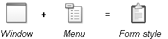
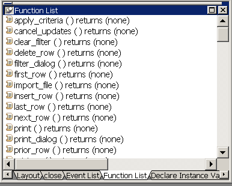
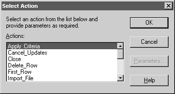
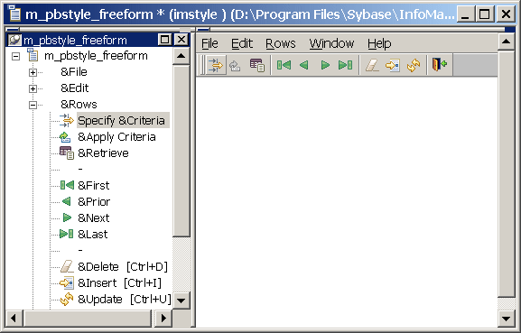

InfoMaker comes with built-in form styles with which users can build sophisticated forms. You can create your own form styles in PowerBuilder and provide them to InfoMaker users. With these custom form styles, you can enforce certain standards in your forms and provide extra functionality to your InfoMaker users. For example, you might want to:
Almost anything you can do in a PowerBuilder window you can do in a custom form style.
InfoMaker users use forms to maintain data. Users can view, add, delete, and update data in a form. Each form is based on a form style, which specifies:
You build form styles in PowerBuilder. A form style consists of:

About the window The window serves as the foundation of the form. It contains one or more DataWindow controls with special names. It is these DataWindow controls that are the heart of the form style. The user views and changes data in the form through the special DataWindow controls.
This chapter refers to the special DataWindow controls as the central DataWindow controls. You must name the central DataWindow controls using one of a set of supported names.
In addition to the central DataWindow controls, the window can contain any other controls that you can place in a window in PowerBuilder (such as CommandButtons, RadioButtons, user objects, and pictures).
About the menu When users run forms, they can pick items off a menu. You build the menu in the Menu painter and associate it with the window that the form style is based on.
When building the menu, you can specify which menu items should display in a toolbar when a form is run. The toolbar works like all PowerBuilder toolbars.
About actions Form styles contain actions that users can attach to command buttons in the form and that you can call in scripts.
Each public window function you define in the window for the form style is available as an action to users of the form style.
For example, the built-in form style Freeform consists of:
About w_pbstyle_freeform The window w_pbstyle_freeform contains a DataWindow control named dw_freeform and contains no other controls.
The PowerBuilder window defines many window-level functions:

Each of these window functions is available as an action in InfoMaker to users of the Freeform form style:

About m_pbstyle_freeform The menu named m_pbstyle_freeform provides the menu items and toolbar items available to users when they run forms based on the Freeform style.
For example, m_pbstyle_freeform contains the item Specify Criteria on the Rows menu; the item also displays on the toolbar:

When InfoMaker users run the form, they can select Specify Criteria to enter selection criteria that are used in retrieving rows in the form.